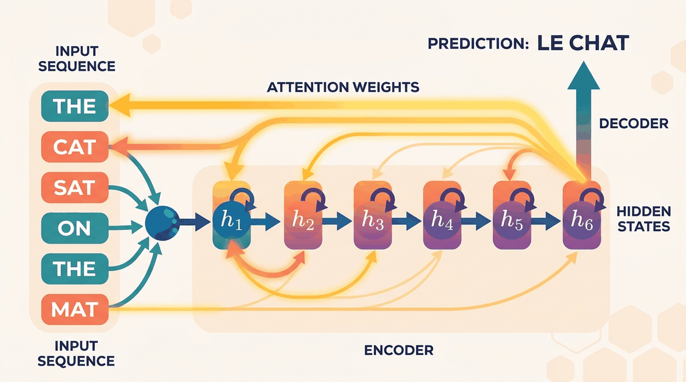

"A sequence model without attention is like a student who reads an entire textbook, then tries to answer questions from the one sentence it can still remember."
Attn, Bottlenecked AI Agent

You now have tokens (Chapter 2) and you know how to embed them (Chapter 1). The remaining question is the architectural one: how do you process a sequence of tokens? This chapter walks through the answer the field gave (RNNs and LSTMs) and the answer that won (the attention mechanism). By the end you will understand why "Attention Is All You Need" was such a watershed moment.
Chapter Overview
This chapter traces one of the most important arcs in deep learning history: the journey from recurrent neural networks to the attention mechanism. We begin with the workhorse of early sequence modeling, the RNN, and uncover why its sequential nature creates both mathematical and practical bottlenecks. Then we introduce the attention mechanism, the breakthrough idea that lets a model learn where to look in a source sequence rather than compressing everything into a single fixed vector. Finally, we formalize attention using the query, key, value framework and build multi-head attention, the engine that powers the Transformer architecture you will study in Chapter 04.
Understanding this progression is essential. You cannot fully appreciate why Transformers revolutionized NLP without first understanding the limitations they were designed to overcome. Each section builds directly on the last, and by the end of this chapter you will have implemented attention from scratch and be ready to assemble the full Transformer.
Attention solves the problem that ended the RNN era: how to let any position in a sequence look at any other position without paying linear cost in the path length. This chapter builds attention from scratch, starting from the failures of LSTMs and arriving at scaled dot-product attention. Once attention clicks, the transformer architecture in Chapter 4 becomes a small step rather than a leap.
- Explain how RNNs process sequences and why vanishing gradients limit their effectiveness on long sequences
- Describe the gating mechanisms of LSTM and GRU cells and explain how they mitigate the vanishing gradient problem
- Derive Bahdanau additive attention and Luong dot-product attention, and explain how backpropagation flows through the attention layer
- Define the query, key, value abstraction and compute scaled dot-product attention from first principles
- Implement multi-head self-attention in PyTorch, including causal masking for autoregressive generation
- Analyze the O(n²) complexity of self-attention and explain why it limits context length
- Chapter 0: Backpropagation, chain rule, gradient descent, PyTorch basics
- Chapter 1: Word embeddings, distributional semantics, vector representations of text
- Chapter 1: Tokenization, subword vocabularies, input representation pipelines
- Linear Algebra: Matrix multiplication, softmax, dot products, projections
Sections
- 2.1 Why RNNs Couldn't Scale to Modern LLMs Why study RNNs if Transformers replaced them?
- 2.2 The Attention Mechanism Why attention changed everything.
- 2.3 Scaled Dot-Product & Multi-Head Attention From seq2seq attention to the Transformer's attention.
What's Next?
In the next section, Section 2.1: Recurrent Neural Networks & Their Limitations, we start by examining recurrent neural networks and the fundamental limitations that motivated the search for better architectures.